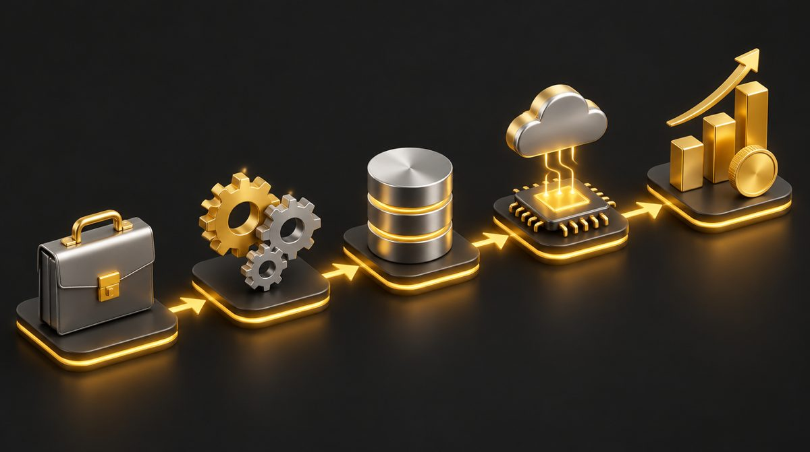
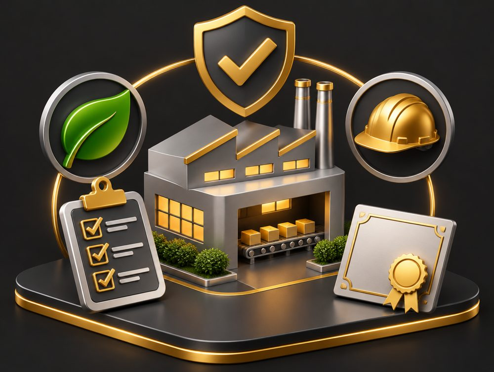

Vijay Sekhar Danaboyina
Founder and Director, Leanova OPEX Solutions Pvt. Ltd., Hyderabad
30+ years of shop-floor and leadership experience in Lean, Six Sigma, Industrial Engineering and Operational Excellence, now helping manufacturers and MSMEs build lean, digitally enabled, future-ready operations.
Practical operational excellence, built for the next generation of business
Vijay Sekhar Danaboyina brings over three decades of experience across manufacturing operations, production planning, industrial engineering, quality management and supply chain. He founded Leanova OPEX Solutions to help organisations become more productive, competitive and future-ready.
His approach combines proven Lean, Six Sigma, TPM and Industrial Engineering methods with digital tools and data-driven decision making. Because his recommendations come from real shop-floor experience, they are practical, they get implemented, and the improvements are measurable and last.
What he helps organisations achieve
Higher productivity
Line balancing, time and motion study, standard times, capacity and takt planning, labour and machine utilisation.
Better quality
Six Sigma (DMAIC), SPC/SQC, 7 QC Tools, root cause analysis and Poka-Yoke to reduce defects and customer complaints.
Reliable equipment
TPM, SMED and OEE improvement to cut breakdowns, shorten changeovers and raise equipment effectiveness.
Faster flow, less inventory
Value Stream Mapping, Kanban and pull systems, MRP, production scheduling and plant layout redesign.
Lower operating costs
Waste elimination, Value Engineering and Cost of Poor Quality reduction that show up directly in the numbers.
Continuous-improvement culture
5S, Kaizen, visual management, standard work and structured training that build capability in your own people.
Digital Lean & AI-enabled operations
Through Leanova, his current advisory focus is on helping organisations, especially MSMEs, adopt digital technology practically and with a clear return on investment. Every engagement follows the same principle:

Digital Lean transformation
Digital maturity assessment, process digitisation and workflow automation built on strong Lean foundations.
Real-time performance visibility
Digital OEE tracking, KPI dashboards and data visualisation so managers see problems as they happen.
AI for smarter operations
Advisory on predictive maintenance, quality prediction, demand forecasting and AI-assisted production planning.
Data-driven decisions & technology selection
Using analytics to strengthen problem solving, and checking where IoT, automation, cloud and BI will actually pay off before money is spent.
Leanova's technology team builds what he recommends. See Automation & AI services and the ASF™ framework.

Quality, safety, environment & compliance
Customers and supply chains increasingly expect suppliers to be efficient, safe and environmentally responsible. His experience with integrated management systems and the Government of India's ZED programme helps organisations meet those expectations with documented, audit-ready systems.
- ISO 9001, ISO 14001 & ISO 45001 implementation, internal audits and certification readiness
- IATF 16949 internal auditing for automotive and auto-component suppliers
- ZED (Zero Defect Zero Effect) certification support for MSMEs under the Ministry of MSME
- Less waste and rework, more efficient use of resources and safer workplaces through Lean and TPM
Leadership across leading manufacturing organisations
He has held leadership and management roles covering Production Planning & Control, Supply Chain Management, Industrial Engineering, Quality Management, Operational Excellence and project management.
Previous employers, not Leanova clients.
- M.Tech, Industrial Engineering & Management
- B.Tech, Industrial Engineering
- Diploma, Mechanical Engineering
- Lean Six Sigma Master Black Belt / Black Belt
- Lean Expert & Lean Manufacturing Consultant
- Integrated Management Systems Lead Auditor (ISO 9001, 14001, 45001)
- IATF 16949 Internal Auditor
- ZED Consultant, Ministry of MSME, Govt. of India
Helping MSMEs and manufacturers compete at global standards
Let's improve your operations together.
Whether you need a Lean assessment, ISO or ZED certification support, OEE improvement, or a practical roadmap for digital and AI adoption, start with a conversation.
Add a professional photograph in place of the "VS" circle. Confirm the founder's title.